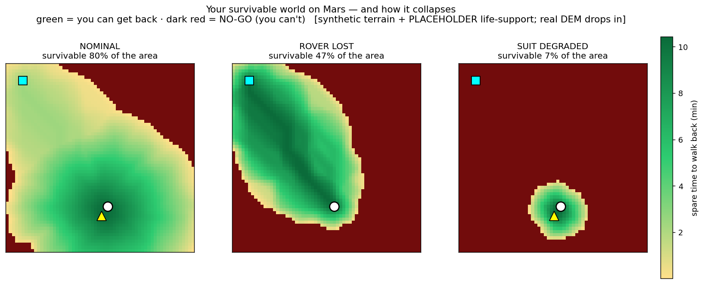
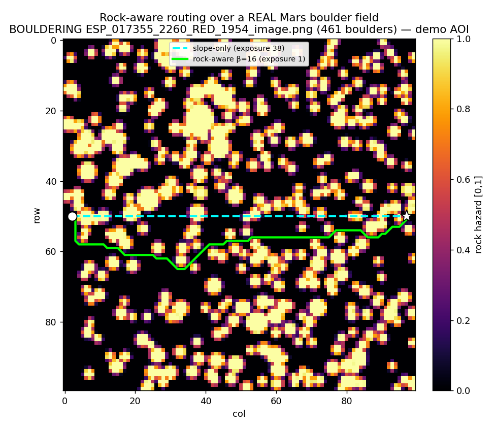

The Mars EVA planner that draws the line you can't cross — and keeps you on the right side of it.
An astronaut on foot has a few hours of oxygen. Cross one invisible line and you can no longer walk back to safety before it runs out. Marswalk finds that line everywhere on the map, and routes so you never cross it.
Every route tool asks "what's the shortest or flattest way there?" The question that actually keeps a crew alive is different: at every step, can you still get back to a safe haven before consumables run out? Marswalk treats that walk-back guarantee as a hard constraint, not an afterthought — and turns it into a map of where you can and cannot safely stand.
From a start point, every cell is survivable only if you can reach it and still walk back in time. Everything else is a no-go zone: you could walk there, but you could not get home. Lose the rover and nearly half the safe world disappears. Degrade the suit and almost nothing is left.

The naive 3-D shortest path. Fast, and often unsafe — it ignores slope, hazards and walk-back.
Penalizes and excludes slopes and cross-slopes a crew can't safely traverse.
The mission route: keeps a feasible return to a haven at every point, under rover-loss and suit-degradation contingencies.
Steers around boulder fields detected from orbit. It only ships if it measurably lowers rock exposure — a gate we test, not assume.
Every layer declares whether it is a hard exclusion, an objective, or informational. Missing data is treated as unknown and blocked — never guessed. Route stability is measured across a DEM-error ensemble, so a recommendation comes with how much it would move under plausible terrain error.
Real orbital boulder labels (HiRISE). We load the dataset's own Detectron2 annotations and train a detector; F1 reported by rock size.
~50K rover images labeled by NASA/JPL crowdsourcing. We segment terrain into soil / bedrock / sand / big-rock and report per-class IoU.
The planner runs on real co-registered DEMs on the team's machines; the sandbox verifies every step offline first.

As Artemis and Mars mission planning turns real, EVAs will be planned under exactly these constraints: limited consumables, contingencies, hazardous terrain, and incomplete maps. Marswalk is open-source decision-support for that problem — and the walk-back / no-go framing it introduces is reusable for any crewed surface operation, on the Moon as much as Mars.
Done & verified: the planner, walk-back, survival envelope, rock-hazard gate, uncertainty, and two real-data training pipelines — 205 tests passing offline.
Owner-side next: running the detectors on a GPU and dropping in a real Jezero HiRISE DEM. The interfaces exist; the numbers above are the mechanism, with placeholder life-support values an owner replaces with cited figures.